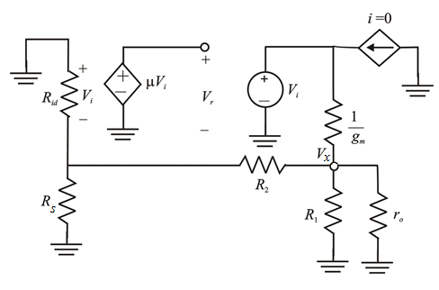

Define loop gain  is,
is,
The voltage is,
From Figure 1, write the expression for voltage .
.
The voltage  is,
is,
Substitute for .
Substitute for in the equation.
At , the reduced voltage ratio becomes:
Thus, the loop gain of the feedback amplifier is: .
The following is the small signal equivalent of the feedback current amplifier, formed by cascading an inverting voltage amplifier with a MOSFET:

Figure 1
Define loop gain is,
The voltage is,
From Figure 1, write the expression for voltage.
The voltage is,
Substitute for .
Substitute for in the equation.
At , the reduced voltage ratio becomes:
Thus, the loop gain of the feedback amplifier is: .
Recall the loop gain of the feedback amplifier.
The open loop gain,
The resistance, 
The output resistance, 
The trans-conductance, 
Thus, the loop gain of the feedback amplifier  is.
is.